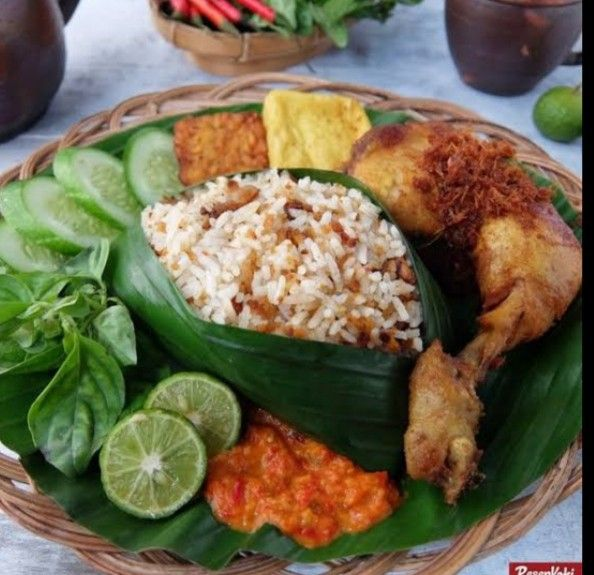
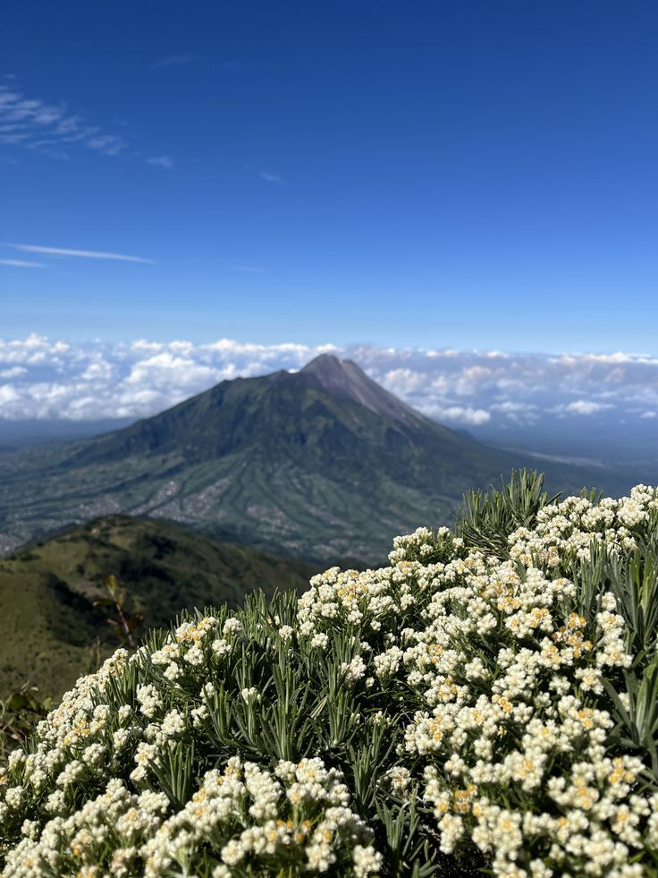
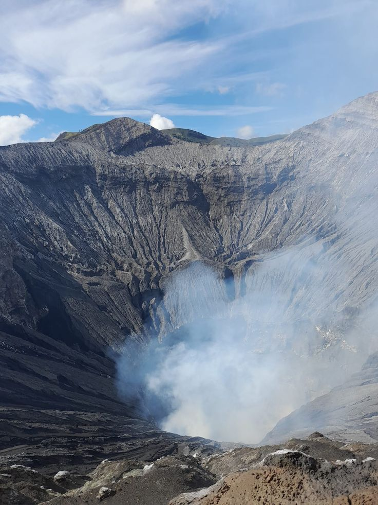
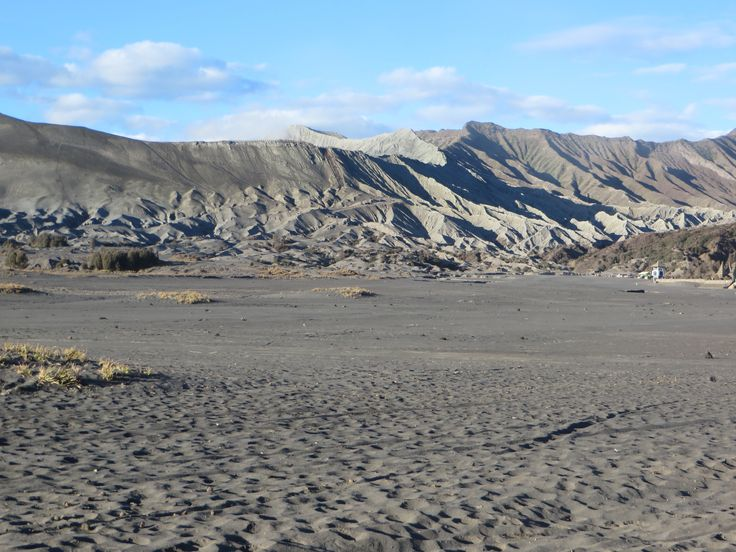
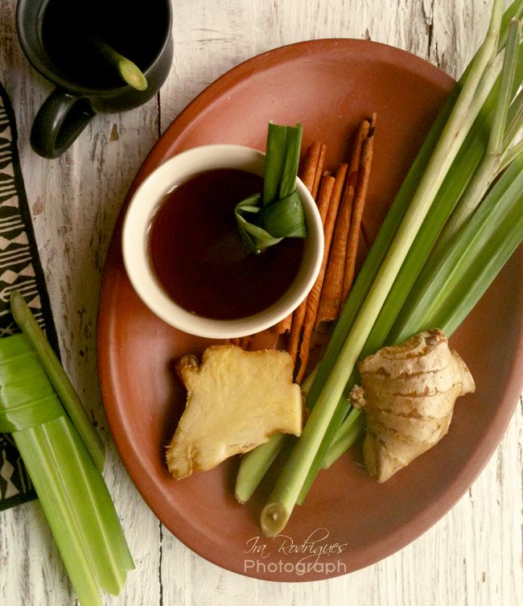
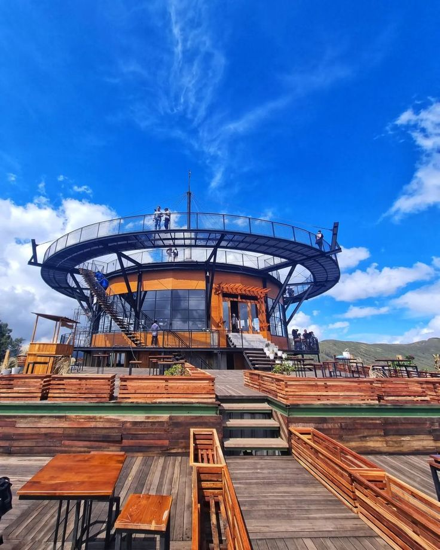

Selamat Datang di Explore Bromo
Selamat datang di Gunung Bromo! Nikmati keindahan alam, udara sejuk, matahari terbit, serta berbagai destinasi wisata dan kuliner khas yang memukau.

Kuliner
temukan berbagai kuliner khas dari Bromo

bunga iconic
temukan berbagai flora khas dari Bromo

Tempat Wisata Bromo
temukan berbagai tempat wisata menarik di Bromo

Penginapan Rembang
temukan berbagai penginapan nyaman di rembang

Minuman khas Bromo
temukan berbagai minuman khas dari Bromo

Hangoout
temukan berbagai cafe di Bromo
Kuliner
Kuliner Bromo menawarkan makanan khas Tengger seperti nasi aron, wedang pokak, jagung bakar, dan bluder kentang yang cocok dinikmati saat udara dingin.
Nasi Aron
Nasi Aron adalah makanan khas masyarakat Tengger yang terbuat dari jagung putih dan biasanya disajikan dengan sayur serta lauk.

Bakso Kuah
Bakso kuah Bromo adalah hidangan bakso hangat yang cocok dinikmati saat udara dingin di kawasan Gunung Bromo.
Wedang Pokak
Wedang Pokak adalah minuman tradisional berbahan rempah yang hangat dan cocok dinikmati saat udara dingin di Bromo.